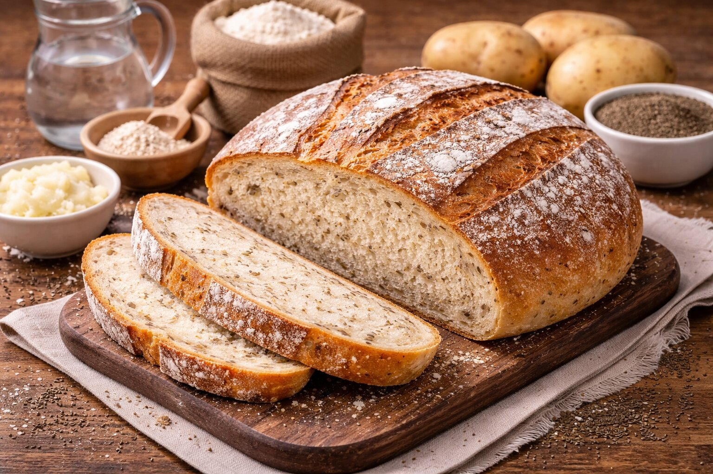

Domáci chlieb
Poctivý chlieb ako od mamy
Domov
Recepty
Poslať svoj recept

Suroviny
1 kg hladkej múky
0,6 l vody
Kvasnice, cukor, soľ
Zemiaky, kmín
Postup
Pripravíme kvások a cesto.
Necháme vykysnúť.
Pečieme pri 170 °C asi 1 hodinu.
← Späť na recepty